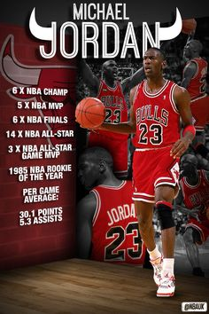

Chicago Bulls
Jordan's individual accolades and accomplishments include six NBA Finals Most Valuable Player (MVP) Awards,
ten scoring titles (both all-time records), five MVP Awards, ten All-NBA First Team designations, nine All-Defensive First Team honors,
fourteen NBA All-Star Game selections, three All-Star Game MVP Awards, three steals titles, and the 1988 NBA Defensive Player of the Year Award.
He holds the NBA records for highest career regular season scoring average (30.12 points per game) and highest career playoff scoring average
(33.45 points per game). In 1999, he was named the greatest North American athlete of the 20th century by ESPN, and was second to Babe Ruth on the
Associated Press' list of athletes of the century. Jordan is a two-time inductee into the Naismith Memorial Basketball Hall of Fame, having been
enshrined in 2009 for his individual career, and again in 2010 as part of the group induction of the 1992 United States men's Olympic basketball team
("The Dream Team"). He became a member of the FIBA Hall of Fame in 2015.
